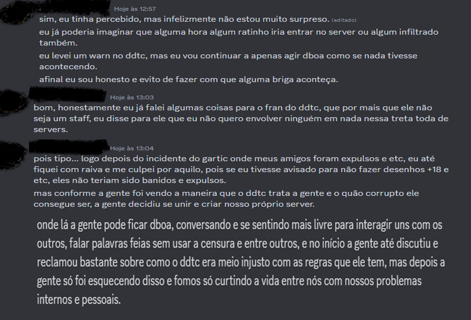
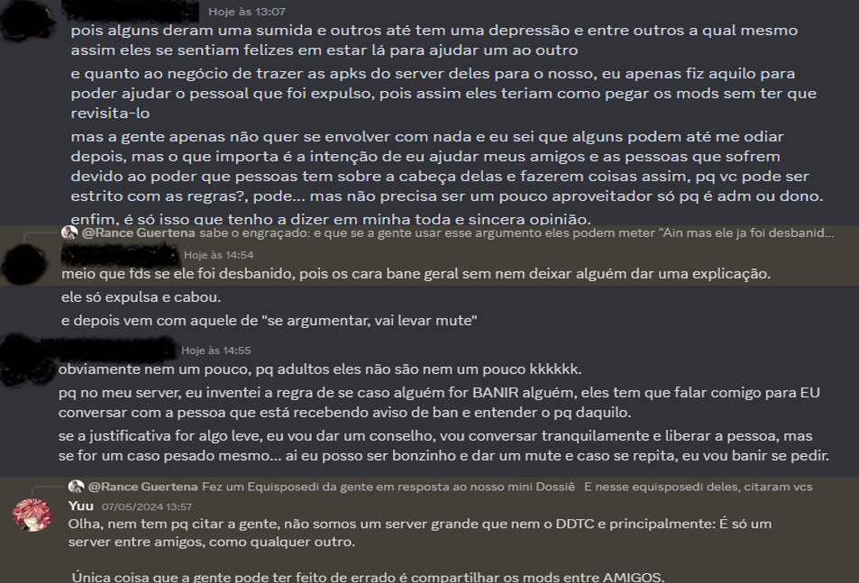
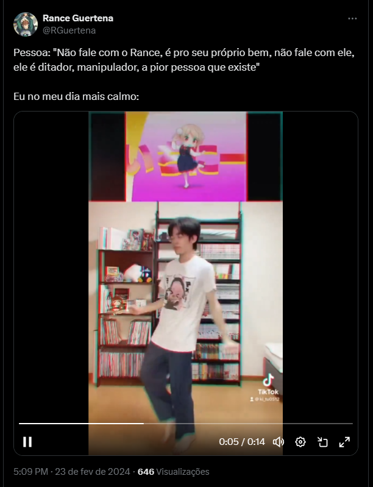
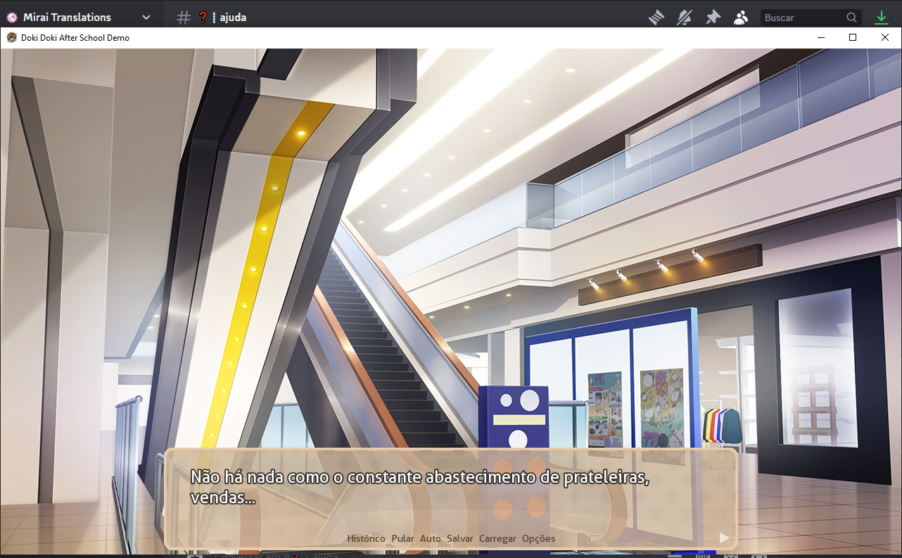
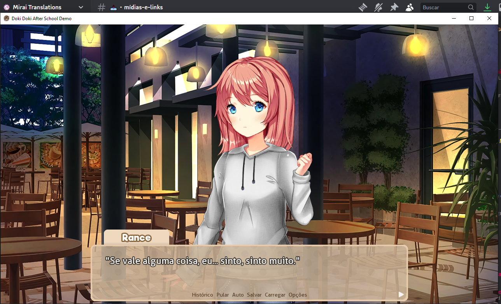

Opa sarve gente, aqui é o Rance
Essa parte aqui é para dar voz ao pessoal do outro servidor que eles citaram no PDF deles, sim um servidor que não tem nada a ver com a treta, um servidor entre amigos que só queriam jogar, conversar, e se divertir, Luke simplesmente os jogou fogo cruzado, praticamente mostrando vários e vários prints desses mesmos membros, falando de maneira grossa, desaforada, COM RAZÃO, afinal eles tinham acabados de serem banidos do servidor, por um motivo que em minha visão, foi besta. e eles estavam desabafando com razão, é correto eles terem xingado, não, não é correto, mas usar um momento em que estavam de cabeça quente, e acabaram desabafando para tentar tacar todo o hate em cima deles, foi sim um golpe baixo.
Os dois primeiros prints é ele explicando do PQ fez o servidor a parte, e do pq colocou os APKs no servidor, um servidor onde apenas amigos estão lá, não é um servidor de tradução, um servidor "Concorrentes do DDTC" apenas um servidor onde apenas amigos próximos estão, e eles não estão envolvidos nessa treta de servidores, não tinha nem motivo deles estarem sendo citados, ja que, repetindo, é um servidor entre amigos, um servidor feito para eles conversarem, jogarem. Onde é sim, covardia jogar um servidor de amigos no meio do fogo cruzado, eles são alvos faceis ne não Luke? O 3 print é praticamente ele confirmando que sim, quem discordar da staff, pode levar warn, mute e ate ban, mas de acordo com o Luke, eles aceitam as críticas sim, até parece que eu e Miki fomos banidos, pq questionamos as atitudes estranhas deles... não pera.
 Sobre o print onde estou ofendendo os membros do DDTC, não vou mentir, e nem esconder, pois diferente deles, assumo os meus erros, e sim nesse ponto eu estou errado, eu estava de cabeça quente, e falei demais, não deveria ter falado daquele jeito, então peço perdão se eu acabei ofendendo pessoas que não tem nada a ver, mas explicando com mais calma o que eu quis dizer é: Os "baba-ovo" que eu quis dizer, eu esto falando de pessoas que, levam um tapa na cara, um soco no estomago e um chute no saco, e ainda uma cuspida na cara, e ainda por cima falam: "Nossa muito obrigado, muito obrigado por me bater! vc é incrível" são dessas pessoas que falei, mas obviamente, eles pegaram isso, jogaram pra vcs, para falarem "Olha só, ele ta xingando vcs em" alem de ser uma tentativa de usar um espantalho, é uma forma bem suja, de fugir do argumento, afinal, pra que argumentar, se posso simplesmente jogar uma frase infeliz que ele disse, e falar "Olha ele xingou vcs em"
Certo, indo pra parte que "A gente ofende", cara, isso chega ate a ser bobo, mas todas as "Ofensas" que fazemos, apenas pegamos todas as ofensas que eles fazem da gente, sim, tudo que fazemos são apenas respostas do que eles fazem, não falamos deles primeiro, um bom exemplo é esse do print abaixo, ou seja, eles podem xingar a gente, zuar a gente, ofender a gente, mas se a gente responder, mesmo que com um meme completamente bobo, ai a gente passou do limite? Ata. Acho que vcs ja ouviram aquela frase: "não entre no ringue, se não estiver disposto a levar um soco na cara" ou seja, se não queria que a gente, zuasse vcs, era só ter ficado quieto, que a gente não ia fazer nada. então espero que vc tenha aprendido essa dica valiosa, ok meu anjo ;D
e pra finalizar, só uma dica de parceiro mano, de amigo, antes de cobrar, ou zuar que a gente usa google tradutor, certifique-se de arrumar todos os erros que o google tradutor deixa, ta bom meu anjo 😉 E olha que esse foi só o mod mais recente, eu não olhei os outros mods, até pq tenho mais o que fazer da vida, do que ficar olhando mod por mod, procurando erros de Google tradutor kakakaq
 Enfim, vou finalizar aqui, e só pra deixar claro essa é a ULTIMA VEZ que vamos falar disso, mesmo se fizerem um PDF com 69 páginas, caguei, não vou responder, vão falar sozinhos. já deu essa treta, tô veio demais pra essa porra então por hoje é só pessoal